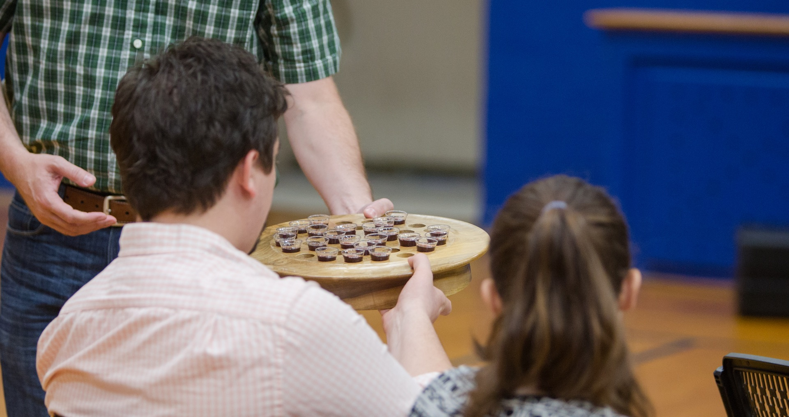

Leadership
The church government of South Durham Church is congregational and led by a plurality of elders, one of whom serves as the pastor. The leadership roles in the church include elders, Ministry Team leaders, and staff.

Elders
Adam Darnell, Pastor
Adam serves as the pastor for South Durham Church. He grew up in Plano, Texas where he became a Christian when he was 12. Adam holds an M.Div. from Southeastern Baptist Theological Seminary and a B.A. in Religious Studies from Belmont University. He is passionate about evangelism and spiritual growth into maturity in Christ. Adam spends his spare time rock climbing and playing guitar. He married his college sweetheart, Heather, in 2006. They have one son, Nathaniel, and another child on the way.
Greg Hobbet, Lay Elder
 Greg grew up in Wisconsin and served for years with the Navigators in Wisconsin, Minnesota, and North Dakota after becoming a Christian. He has a heart for racial reconciliation, evangelism, and deep theological study and discipleship. He reads, writes, travels, enjoys retirement, and roots for the Packers in his spare time. He and his wife Sue have four grown children, Jeffrey, David, Joy, and Christa, and ten grandchildren.
Greg grew up in Wisconsin and served for years with the Navigators in Wisconsin, Minnesota, and North Dakota after becoming a Christian. He has a heart for racial reconciliation, evangelism, and deep theological study and discipleship. He reads, writes, travels, enjoys retirement, and roots for the Packers in his spare time. He and his wife Sue have four grown children, Jeffrey, David, Joy, and Christa, and ten grandchildren.
Christian Jernigan, Lay Elder
Christian is a native Arkansan who has lived all over the United States in addition to spending five years abroad planting churches. He holds an M.A. and an M.Div. from Southeastern Baptist Theological Seminary. He loves rooting for the Razorbacks and the St. Louis Cardinals when he's not outside working in on the lawn or spending time with his wife, Sarah, or their kids, A.J. and Hannah.Donnie Pulliam, Lay Elder
 Donnie grew up outside of Greenville, NC and is a graduate of North Carolina State University. As a lifelong learner, he is also a student of intercultural studies at Southeastern Baptist Theological Seminary. Professionally, he leads a team of scientists in RTP. He is passionate about evangelism, racial reconciliation, and international ministry. He and his wife, Amanda, have two kids, Olivia and John.
Donnie grew up outside of Greenville, NC and is a graduate of North Carolina State University. As a lifelong learner, he is also a student of intercultural studies at Southeastern Baptist Theological Seminary. Professionally, he leads a team of scientists in RTP. He is passionate about evangelism, racial reconciliation, and international ministry. He and his wife, Amanda, have two kids, Olivia and John.